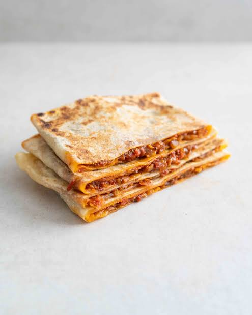

Mhajeb is one of Algeria’s most beloved street foods. These flaky, layered flatbreads are made from a fine semolina dough that is stretched paper-thin, folded into a square packet around a savory filling, and cooked on a hot griddle. The traditional filling—called Tchektchouka—is a rich, slow-simmered mixture of onions, tomatoes, and garlic, often packed with a fiery kick of harissa. Crispy on the outside, tender on the inside, and bursting with warm spice, they are best enjoyed fresh and piping hot.
Heat olive oil in a large pan over medium heat. Add the sliced onions and a pinch of salt. Cook slowly for 15-20 minutes until completely soft and translucent—do not let them brown too much. Add the garlic, tomatoes, tomato paste, harissa, and spices. Simmer for another 15 minutes until the tomatoes break down and all excess liquid has evaporated. The stuffing must be thick and dry, or it will tear the dough later. Set aside to cool completely.
In a large bowl, mix the fine semolina, flour, and salt. Gradually add lukewarm water while mixing until a cohesive dough forms. Knead vigorously for 10-15 minutes (or use a stand mixer). The dough needs to become incredibly smooth, elastic, and non-sticky. If it feels too stiff, add a few drops of water as you go.
Divide the dough into smooth, golf-ball-sized portions. Generously coat a tray and each dough ball with vegetable oil to prevent a skin from forming. Cover with plastic wrap and let them rest for at least 30 to 45 minutes. This relaxes the gluten, making the dough easy to stretch without snapping.
Oil your clean work surface and your hands. Take one dough ball and flatten it, spreading it outward from the center using the palms of your hands until it is translucent and paper-thin. Fold one side over to the center, then the opposite side, creating a long rectangle strip. Place 1-2 tablespoons of the cooled filling in the center of the strip. Fold the top and bottom flaps over the filling to form a neat, square envelope.
Preheat a heavy skillet, tadjine, or flat griddle over medium heat and brush lightly with oil. Carefully lift the stuffed packet and place it onto the hot surface. Cook for 2-3 minutes until the bottom develops beautiful golden-brown spots, then flip to cook the other side. The flatbread should puff up slightly as the steam separates the thin layers. Serve immediately while hot and flaky.